Staff
Instructors¶

Teaching Assistants ((u)GSIs)¶
 Aarushi Karandikar (bio) Hi everyone! I'm a senior studying data science and human rights. In my free time, I love to read, hunt down new food spots, and make a (concerning) number of Spotify playlists. Looking forward to meeting y'all this semester!
aarushi.k@berkeley.edu
OH: 581 SOCS, Wed 3-4 PM
|
 Alice Chen (bio) Hey! I'm Alice, a senior studying economics and data science. Data 8 has been my favorite class at Cal, so I'm super excited to be part of your learning experience! Talk to me about tiktok, food or anything really :)
alicechen295@berkeley.edu
OH: 581 SOCS, Wed 2-3 PM
|
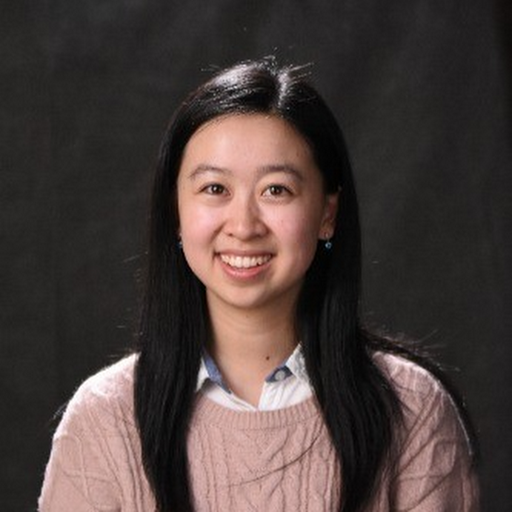
Angela Guan (bio) My name is Angela Guan, and I am from San Jose, CA. I am a pursuing my 5th year masters in data science, and I love Data 8! I'm on the Cal Table Tennis team, and I enjoy going to beaches, hiking, baking, and traveling. Looking forward to meeting you!
guanangela@berkeley.edu
OH: B6 Evans, Tue 7-8 PM
|
Ashika Raghavan (bio) Hey everyone! I'm a senior from SoCal studying Anthropology and Linguistics, and minoring in Education. Outside of classes, I am involved with the campus yearbook (shoutout to Blue & Gold!) and enjoy binging tv shows, reading, and spending time with friends. I'm super excited to be returning for my fourth semester on staff for Data 8, and hope you all love the class as much as I do!
ashika-raghavan@berkeley.edu
OH: 581 SOCS, Wed 2-3 PM
|
 Carlos Ortiz (bio) Hi friends! I'm Carlos, a first-generation senior majoring in Data Science. I took Data 8 in 2019 and it changed the trajectory of my life—in the best way possible! Also, I love to overspend on local coffee and food! :)
carlosortiz@berkeley.edu
OH: 581 SOCS, Tue 12-1 PM
|
Carter Junhao Sun (bio) Hey everyone, I'm a junior studying economics and data science, and I enjoyed taking Data 8 as my first exposure to data science! In my free time, I like playing/watching basketball and just relaxing. Looking forward to meeting everyone!
csun457@berkeley.edu
OH: 581 SOCS, Fri 2-3 PM
|
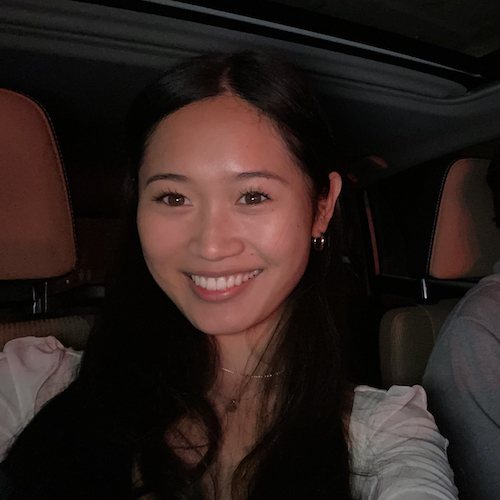
Ciara Acosta (bio) Hi! I'm a third year DS + Econ major from the East Bay. I took Data 8 my first sem as a Data Scholars student + am beyond excited for you to join <3 Feel free to reach out abt literally anything!
ciara.acosta@berkeley.edu
OH: 581 SOCS, Tue 2-3 PM
|
 Devarsh Dhanuka (bio) Hi everyone! I am a Senior majoring in CS and Economics and this is my third semester as a uGSI. Data 8 has been one of my favorite classes at Cal and I hope you all love it as much as I did! In my free time, I love watching sports (I'm a huge Chelsea fan), binge-watching HIMYM and Friends, and playing FIFA with my friends.
devarshdhanuka@berkeley.edu
OH: 210 South Hall, Thu 2-3 PM
|
|
Ellen Kwok (bio) let's hope we all get to meet in person!
ellenkwok882@berkeley.edu
OH: 581 SOCS, Tue 4-5 PM
|
 Ellen Persson (bio) Hi everyone, I'm Ellen, and I'm a senior majoring in Engineering Math and Statistics. Outside of school, I play Ultimate Frisbee, hike the Berkeley hills, and catch lots of virtual pokemon in Pokemon Go. Looking forward to meeting you this semester, and go bears!
nellepersson@berkeley.edu
OH: 581 SOCS, Tue 1-2 PM
|
 Emily Guo (bio) Hey! I'm a junior studying Data Science and Economics. In my free time, I like to travel, listen to music, and watch YouTube videos. Looking forward to meeting you all!
lingjunguo@berkeley.edu
OH: B6 Evans, Thu 6-7 PM
|
James Weichert (bio) My name is James Weichert (he/him), I'm a junior majoring in computer science and data science, and I'm a first-semester uGSI for Data 8! Outside of classes, I'm also the Academic Affairs Vice President for the ASUC. You can usually find me in Moffitt Library (rip) or spending too much money on chicken tenders at the Golden Bear Cafe.
jweichert@berkeley.edu
OH: 581 SOCS, Tue 4-5 PM
|
 Jessica Qian (bio) Hey y'all! I'm a third year studying Data Science and Japanese. Outside of classes, I love making music and art, cooking and eating, and clouds. I hope you have a great time in Data 8, and I'm looking forward to meeting everyone this semester!
jaqian@berkeley.edu
OH: 210 South Hall, Thu 1-2 PM
|
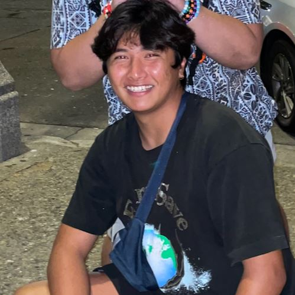
Joshua Alvarez (bio) Hi everyone! I'm a fourth year transfer from Vermont studying Data Science with an emphasis in Econ. I love surfing, boxing, jazz music, and the water fountain on ground floor Evans! I'm sohr excited to meet y'all! 😹🤣🤣💀😹😹💀
cayanan.joshua@berkeley.edu
OH: 581 SOCS, Wed 2-3 PM
|
 Joyce Zheng (bio) Hi everyone! I'm a senior from Naperville, Illinois (suburb of Chicago!) studying Data Science and Public Health. In my free time, I love to explore new foodie places, bullet journal, and go on spontaneous trips with my friends (twin peaks at 2am, anyone?). I'm super excited to meet all of you this semester!
joyceezheng@berkeley.edu
OH: 581 SOCS, Wed 3-4 PM
|
Kanchana Samala (bio) I am a junior(she/her) studying Data Science and pursuing the CalTeach minor. I am part of SKY Campus Happiness Club at Berkeley and I meditate daily. I love listening to music and watching Turkish TV. I am available to listen and talk about anything, please feel free to reach out!
kanchoo@berkeley.edu
OH: 581 SOCS, Wed 4-5 PM
|
|
Kevin Miao (bio) Hey, you! I am an M.S. student in EECS who loves explainable artificial intelligence and computer vision. This is my 9th time teaching overall and 7th time on Data 8 staff, excited for another round of chatting about A/B testing (or something else) and meeting y'all.
kevinmiao@berkeley.edu
OH: Email for Appointment
|
Margaret Misyutina (bio) Hi everyone! I'm a senior from San Diego majoring in Data Science and minoring in Computer Science. I absolutely LOVE teaching Data 8; this is my 8th semester on staff! In my free time I enjoy exploring SF, watching sunsets, petting cats, and making smoothies :)
marmis@berkeley.edu
OH: B6 Evans, Tue 7-8 PM
|
Matt Moon (bio) Hey everyone! I'm a fourth year studying data science originally from SoCal. In my free time, I love to travel and cook. You can also probably find me wasting my money on boba 7 days of the week. Excited to meet y'all and looking forward to the semester :)
sjmoon21@berkeley.edu
OH: B6 Evans, Thu 6-7 PM
|
Matthew Shen (bio) Sophomore studying CS & DS. From Berkeley. Big cat guy.
mattyshen@berkeley.edu
OH: 210 South Hall, Thu 2-3 PM
|
|
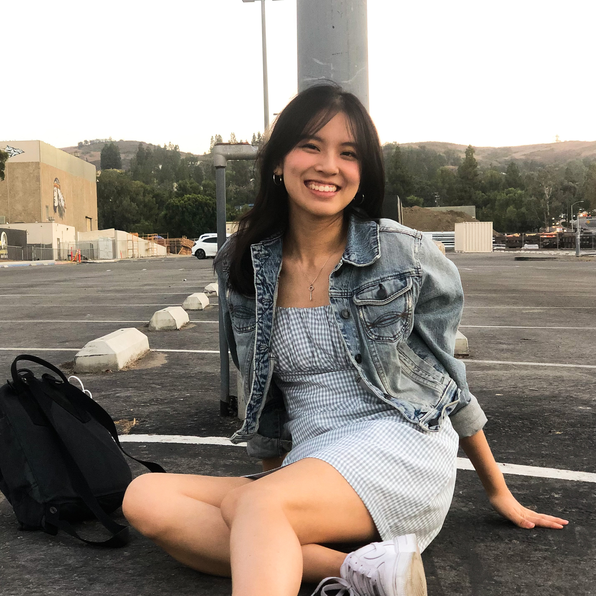
Meghan Wang (bio) Hi! I'm a senior studying Industrial Engineering and Operations Research. I'm originally from SoCal but have loved exploring the Bay Area! Outside of classes, I enjoy sewing, re-watching Marvel movies, consuming an excessive amount of coffee, and making friends karaoke with me. https://bit.ly/thepowergrind
meghanwang@berkeley.edu
OH: 581 SOCS, Wed 12-1 PM
|
 Melissa Wong (bio) Hi!!! I'm a fourth year studying Computer and Data Science, and I'm so excited to be a uGSI for the Spring 2022 semester! I'm originally from LA and I love talking Marvel, design, doggos, and web dev. tinyurl.com/cheese-bebe
melissarwong@berkeley.edu
OH: 581 SOCS, Wed 3-4 PM
|
Mira Sharma (bio) Hi everyone! I'm a second year studying computer science, and I love reading sci-fi, eating fried rice, and going on runs. Super excited to meet you all!
mirasharma@berkeley.edu
OH: 210 South Hall, Thu 5-6 PM
|
Nic Brath (bio) I am a first year graduate student studying Data Science & Information. Outside of school, I enjoy making music, baking, cooking, hiking, and when I have the time finding and exploring new food places.
brathwaiten16@berkeley.edu
OH: 581 SOCS, Fri 2-3 PM
|
|
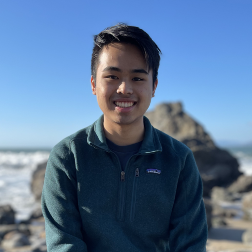
Nicholas Ha (bio) Hi everyone! I'm a senior cs major from Orange County, CA. I really enjoy binge-watching tv shows and going on late night food runs. Looking forward to a great semester!
nickha@berkeley.edu
OH: 581 SOCS, Wed 1-2 PM
|
 Nicole Park (bio) Hi! I'm a third year double majoring in Data Science and Economics. Outside of school, I enjoy live music (concerts, musicals, etc.), in-theater movies, and grocery shopping. Welcome to DATA8!
nicolepark@berkeley.edu
OH: 581 SOCS, Wed 4-5 PM
|
 Noor Hanafi (bio) I'm a senior studying Data Science and Economics. In my free time, I enjoy exploring Berkeley, driving out to the beach, and cooking with friends. I can't wait to meet all of you this semester!
nhanafi@berkeley.edu
OH: 210 South Hall, Thu 4-5 PM
|
Olivia Chang (bio) Hi there! I'm a senior from SoCal studying Statistics & Data Science. I love hiking with my Goldendoodle Harley, eating açaà bowls, and defending my love for Artichokes. Super excited to get to know you this spring :)
o.chang@berkeley.edu
OH: 581 SOCS, Tue 1-2 PM
|
|
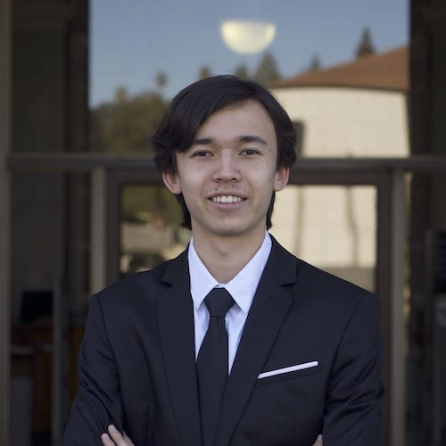
Oscar Bjorkman (bio) Looking forward to a fun semester! Google my name for more info :)
oscarb@berkeley.edu
OH: 581 SOCS, Wed 1-2 PM
|
Oswaldo Pastor (bio) Hi everyone! I'm a third year international student from Peru majoring in Civil Engineering. On my free time I enjoy playing basketball and practicing jazz improv. D8 has been my favorite class at Cal and I'm really excited to be teaching it this semester!
oswaldo1603@berkeley.edu
OH: 210 South Hall, Thu 1-2 PM
|
Padma Venkatraman (bio) I'm a Junior majoring in DS and Astro! Data 8 is a great class and I look forward to working with you this semester!
vpadma@berkeley.edu
OH: 210 South Hall, Thu 5-6 PM
|
Prasann Guruprasad (bio) Hi everyone! I am a junior from Bangalore, India studying economics and statistics. Outside of class, I am a huge soccer (brownie points if you call it 'football' and if you support Bayern Munich), Formula 1 and cricket fan. Hopefully I get to see some of you in person over the course of the semester!
gprasann@berkeley.edu
OH: 581 SOCS, Tue 3-4 PM
|
|
Raymond Lui (bio) Since Ciara keeps reminding me, you can just find out who I am by looking through the staff bios from past semesters. I totally didn't steal this idea from a previous TA.
ralui@berkeley.edu
OH: 581 SOCS, Wed 1-2 PM
|
Raymond Wang (bio) Doctors say the human body is about 70% water, my doctor says I’m 70% jasmine tea. Hi, I really like jasmine tea, pandas (the animal) and neuroscience. Master Oogway once said the secret to success in Data 8 is
raymondwang@berkeley.edu
OH: 210 South Hall, Thu 1-2 PM
|
Rebecca Hu (bio) Third year Wisconsin sports fan from Maryland studying coloring and computers
rhu01@berkeley.edu
OH: 210 South Hall, Thu 2-3 PM
|
 Rita Wang (bio) This is my last semester teaching this class and I love this class so much that I was involved with this course every semester I'm at Berkeley (including summers)! I hope you end up loving this class as much as I did.
ritawang@berkeley.edu
OH: 581 SOCS, Tue 12-1 PM
|
 Selena Lu (bio) Hi everyone! I’m a senior from Los Angeles studying Data Science and Public Health. In my free time, I love watching dramas, trying new food and boba places, and going on spontaneous trips. I’m super excited to be on staff this semester and I’m looking forward to meeting you all!
selenalu@berkeley.edu
OH: 581 SOCS, Tue 3-4 PM
|
Sonya Kiskachi (bio) Hey everyone! I'm Sonya, and I'm a junior studying Data Science from the Orange County area. In my free time, I love to hike, knit and eat Trader Joe's frozen food. Excited to meet everyone this semester :)
sonyak@berkeley.edu
OH: 581 SOCS, Tue 3-4 PM
|
Sunny Shen (bio) Will Furtado's biggest fan
sunnyshen@berkeley.edu
OH: 581 SOCS, Tue 1-2 PM
|
Sydnie Zanone (bio) Hi! I'm Sydnie, a senior from San Jose majoring in computer science. In my free time I like to bake, update my Goodreads bookshelves, and try out new restaurants in the Bay. Looking forward to meeting all of you this semester!
sydniezanone@berkeley.edu
OH: 210 South Hall, Thu 4-5 PM
|
 Tong Shen (bio) Hi! I'm Tong, a senior majoring in Data Science and Economics. Data 8 is an amazing class and I hope you'll love it! Feel free to ask me anything!
tongshen@berkeley.edu
OH: 581 SOCS, Tue 2-3 PM
|
Varun Jadia (bio) Hello! I'm a Senior studying CS and Econ and this is my fourth semester on course staff. Data 8 is one of my favorite courses here at Cal and I hope you enjoy it too! Looking forward to a great semester :D
jvarun@berkeley.edu
OH: 581 SOCS, Wed 12-1 PM
|
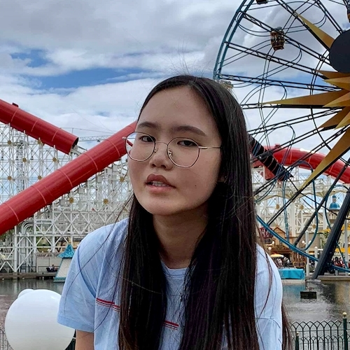
Wendy Kim (bio) Hi everyone! I'm a third year from Irvine studying Data Science and Statistics. I love my Spotify playlists, night drives, and Data 8 of course. :) Excited to meet you all this semester!
wendykimm@berkeley.edu
OH: 581 SOCS, Tue 2-3 PM
|
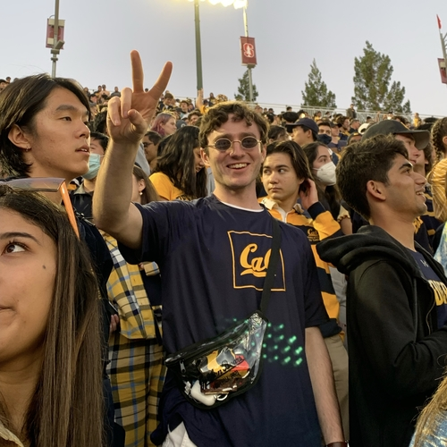
William Furtado (bio) Sunny Shen's biggest fan
willfurtado@berkeley.edu
OH: B6 Evans, Tue 7-8 PM
|
|
Yuqi Ye (bio) Hi bears! My name is Yuqi and I am a junior majoring in Business and Data Science. I LOVE teaching Data 8 and this is my fourth semester on staff! In my free time I enjoy singing and practicing Kpop dance. Looking forward to meeting you!
yuqiye@berkeley.edu
OH: 581 SOCS, Wed 3-4 PM
|
Tutors¶
|
Atticus Ginsborg (bio) Hi! I'm Atticus and I'm a Sophomore studying Data Science and Economics. In my free time I love watching and playing all sports (especially chess), reading, and watching youtube. I really enjoyed Data8 when I took the course and am looking forward to an awesome semester!
atticus.ginsborg@berkeley.edu
|
Audrey Im (bio) Hiya, I'm Audrey! I'm a current sophomore majoring in Computer Science and minoring in Data Science. Ask me about Data 8, the Arctic Monkeys, anime, or food! I look forward to getting to know you all this semester :)
audreyim@berkeley.edu
|
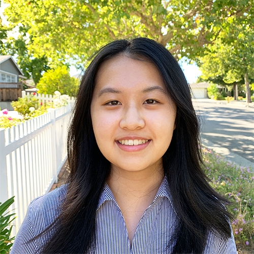
Diana Qing (bio) Hi! I'm Diana and I'm a sophomore majoring in Computer Science and minoring in Public Policy. Data 8 was one of my favorite classes, and I'm excited to get to know everyone better this semester!
dianaqing@berkeley.edu
|
Haru Yamamoto (bio) Hey guys! My name is Haru Yamamoto, and I am a junior studying MCB with a minor in DS. I'm from Yokohama, Japan and Greenwood, IN. Data 8 was one of the first data science courses I ever took and my first exposure to programming, so I'm excited to help you all through the course!
haru.yamamoto@berkeley.edu
|
|
Jeffrey Chen (bio) Hello everyone!! I'm a sophomore majoring in CS and DS. In my free time I enjoy listening to kpop, sleeping, and watching random videos. Feel free to email me some song recommendations!!
xjeffreychen12@berkeley.edu
|
Kaitlyn Phan (bio) Hello! My name is Kaitlyn, and I am a sophomore majoring in Economics and Data Science. In my free time, I like hiking, working on random art projects, and baking. Excited to meet you soon :)
kaitlynphan@berkeley.edu
|
Karen Li (bio) Hello! I'm a third year majoring in public health and this is my 4th semester on course staff. In my free time I love gaming, going on walks, and trying new food places!
karen.li@berkeley.edu
|
Katherine Ma (bio) Hi! I'm a third year from Taiwan majoring in MCB and minoring in Data Science. I love cooking, drawing, and watching shows. Can't wait to meet you all!
katherine0806@berkeley.edu
|
|
Kelsey Ley (bio) Hi guys! I'm a second-year majoring in Data Science and Cognitive Science. Outside of class, I like to go on runs, eat good food, and play an obsessive amount of word hunt.
kelseyley@berkeley.edu
|
 Kinsey Long (bio) Hi all! I'm Kinsey, a 3rd year from Hong Kong majoring in Chemical Biology and minoring in Data Science and Bioengineering. Come talk to me about music, politics, food, board games, or anything cool!
kinsey.long@berkeley.edu
|
 Massimiliano (Max) Lucas (bio) Hi everyone! My name is Max and I'm a third year from Sunnyvale, CA doubling in IEOR and Data Science. On campus I'm part of the UC Rally Committee, and I love surfing, windsurfing, climbing, and listening to random podcasts. Super stoked for this semester, and I hope to see you in class (or at a Cal sports game)!
mlucas@berkeley.edu
|
Miranda Shen (bio) Hi everyone! I'm a sophomore from Toronto, Canada double majoring in Data Science and Psychology. I'm involved in criminal psychology and neuroscience research here at Cal, but outside of academics, I love painting, baking, and exploring Berkeley with my friends!
miranda.l.shen@berkeley.edu
|
|
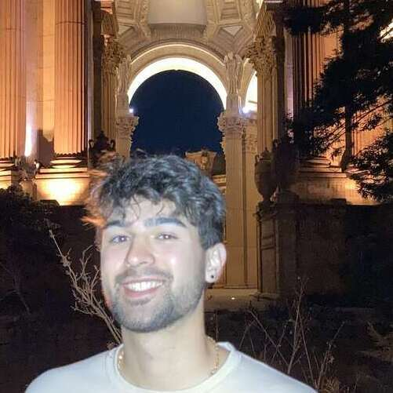
Nikaash Maheshwari (bio) Hey all, I'm Nikaash and I'm from the beautiful Boulder, Colorado! In my free time you can catch me trying ski runs far past my ability and baking blueberry scones. Enroll in my section to learn about how these activities are correlated!
nikaash.maheshwari@berkeley.edu
|
 Noah Solano Tran (bio) Hi everyone, I'm Noah! I'm a big fan of figure skating, Parks and Rec, and Data 8. Excited to work with everyone!
noah.s.tran@berkeley.edu
|
Owen Sleigh (bio) Hi! My names Owen, I took Data 8 fall 2019 and I’m a third year applied math and computer science major from San Diego. When I’m not Data8ing I like to bake and spend time outdoors
owensleigh@berkeley.edu
|
 Peter Valverde (bio) I love hiking and working out. I’m here to help y’all anytime, just shoot me an email!
pverde1@berkeley.edu
|
|
Rithvik Sunku (bio) Hey everyone, I'm a third year studying Data Science with an Econ concentration. In my free time, I love checking out new food spots, going on day trips, doing photography, and watching baseball and football. Look forward to meeting y'all this semester!
rithviksunku@berkeley.edu
|
Ron Wang (bio) Hi everyone! I am a second year studying data science and economics from Shanghai, China (fun fact: there was an exam question in Data 8 about soup dumplings, our local-favorite treat). In my spare time, I enjoy playing soccer, cooking, and visiting new places.
yifengwang@berkeley.edu
|
 Sabrina Ma (bio) Hi! I'm a sophomore studying business and computer science. Ask me about my boba ranking spreadsheet :)
sabrinakma@berkeley.edu
|
Sameer Keswani (bio) Hey everyone! I'm a sophomore and I am studying CS and DS. I love soccer (love Messi & Fifa), going to the gym, and discovering new restaurants in SF. I can't wait to meet you all this semester!
sameerkeswani@berkeley.edu
|
|
Samiha Singh (bio) I am a sophomore studying Economics and Data Science. I fell in love with Data 8 when I took it freshman fall and I’ve been a tutor for Data Scholars Foundations as well. This, however, is my first semester as a Data 8 tutor and I’m really excited to meet y’all :)
samihasingh@berkeley.edu
|
Sara Fang (bio) Hello! I am a junior studying data science and computer science, and this is my fifth semester on DATA8 course staff. I'm from the Los Angeles area, and I love the beach, scenic views, and music. I hope to see you in my tutoring section or in office hours! :)
sarafang@berkeley.edu
|
Sarah Song (bio) Hi!! I'm a second-year from Iowa studying Statistics and Data Science. I enjoy crocheting, napping, and eating anything without cheese. Excited to meet everyone :)
sasong@berkeley.edu
|
Sean Wei (bio) Hey everyone! I'm a third-year Data Science student from San Diego, CA. I love talking about sports, movies, funny TV shows, and food.
seanwei2001@berkeley.edu
|
|
Shawn Huang (bio) Hey everyone I'm Shawn, a junior studying computer science. In my free time I enjoy watching basketball and playing video games. Looking forward to meeting you all!
shawn.huang@berkeley.edu
|
 Sofia Kwee (bio) I am a third year studying data science with a concentration in computational biology. I am from San Diego and I love to spend time outside and play tennis.
sofiakwee@berkeley.edu
|
Sonya Shankar (bio) Hi! My name is Sonya Shankar, and I am a junior studying Cognitive Science with a minor in Data Science & Dance. In my free time, you will always find me dancing, listening to music, or at the gym. Data 8 has definitely been one of my favorite courses that I have taken at Cal, and I hope it becomes yours too :) looking forward to a great semester with you all!
sonyashankar@berkeley.edu
|
Steven Deng (bio) Hi! I'm Steven, a second year studying Data Science and Economics. In my free time I like to skateboard, play videogames, listen to music, and go running! Excited to meet all of yall!
stevendeng@berkeley.edu
|
|
William Panitch (bio) I still miss my dog :/
willchp@berkeley.edu
|
 Zaid Maayah (bio) Hi everyone! I'm a second-year coming all the way from Jordan and I study Data Science and Linguistics. I hope you all enjoy Data 8 this semester!
zaidmaayah@berkeley.edu
|
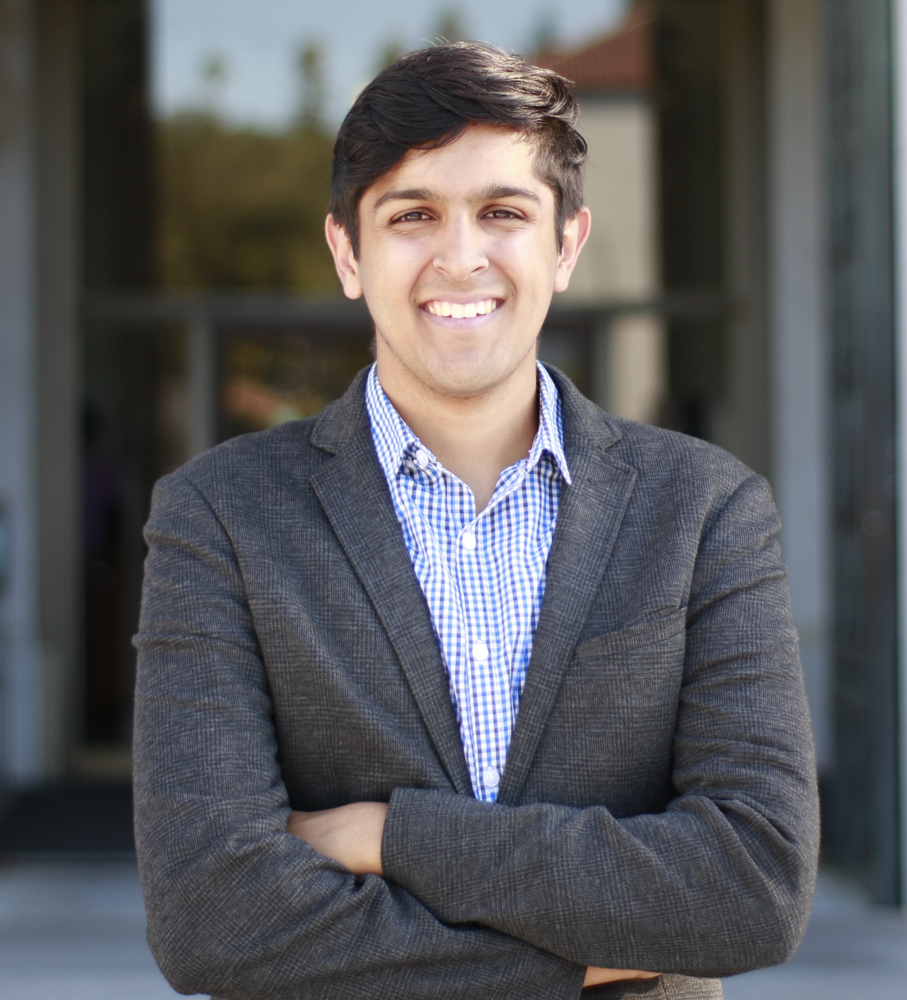
Zayan Khanmohammed (bio) Hi everyone! I am a junior from Los Angeles studying Data Science & Public Health. Outside of class, I love playing basketball, listening to music, and traveling the world. Excited to meet y'all!
zayankhanmd@berkeley.edu
|
Disclaimer: The views and opinions expressed by individual staff members are those of the authors, and do not necessarily reflect the official policy or position of UC Berkeley or any other organization.